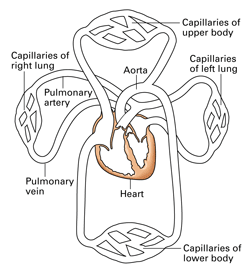
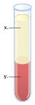
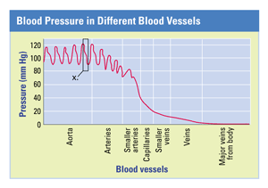

Reviewing Concepts
Multiple Choice
Choose the letter of the best answer.
1. Which structure is not a component of the circulatory system?
a. heart
b. lung
c. blood
d. artery
2. What is the main function of the lymphatic system?
a. to bind oxygen to hemoglobin
b. to remove wastes from the body
c. to return fluids to the circulatory system
d. to release substances for blood clotting
3. Where is blood pressure greatest?
a. lymphatic system
b. veins
c. vein end of capillary
d. artery end of capillary
4. In the systemic circuit, blood returns to the heart via
a. lymph vessels.
b. arteries.
c. capillaries.
d. veins.
5. What is the function of the pulmonary circuit?
a. to deliver blood to body cells
b. to oxygenate blood
c. to absorb nutrients
d. to deliver blood to the brain
6. What is the main function of the diaphragm?
a. to vibrate, producing sound
b. to exchange O2 and CO2
c. to expand the chest cavity
d. to control the rate of breathing
7. Which substance is known to make tobacco addictive?
a. ammonia
b. carbon monoxide
c. hydrogen cyanide
d. nicotine
Short Answer
8. Describe the differences between capillaries, arteries, and veins.
9. How do larger molecules move across epithelial membranes in the capillaries?
10. Explain how heart contractions are regulated.
11. Explain the major differences between red and white blood cells.
12. What is the main function of blood platelets?
13. Why is hypertension dangerous to the circulatory system?
14. Describe the pathway of air from the mouth (or nose) to the lungs.
15. What characteristic of blood is monitored by the brain in controlling the rate of breathing?
16. Discuss the effects of smoking on the circulatory and respiratory systems.
Visualizing Concepts
17. Copy the diagram below and use red and blue colored pencils to follow the path of blood. Use blue when the blood is oxygen-depleted and red when the blood is oxygen-rich.

Applying Concepts
Analyzing Information
18. Analyzing Diagrams Below is a diagram of blood that has been separated into its components.

a. In which part of the test tube would you expect to find the greatest concentration of hemoglobin?
b. What are four substances you might find dissolved in the part labeled x?
c. Considering what you have read about the materials that make up blood, why do you think the materials in part x rise to the top?
19. Analyzing Graphs The graph below shows blood pressures in different parts of the cardiovascular system. Use it to answer the questions that follow.

a. In the area of the graph labeled x, what is the systolic and diastolic pressure of this person?
b. In which blood vessels is blood pressure the highest? Lowest?
c. What mechanism allows blood to return to the heart?
Critical Thinking
20. Evaluating Promotional Claims Certain tobacco products claim to have less nicotine than other products. Do you think the lower nicotine product would be less harmful? Explain the reason for your conclusion.
21. Relating Cause and Effect A certain person used to have normal blood pressure. But now this person's blood pressure has risen to 140/90 for an extended period of time. What are some possible reasons for the increased blood pressure? What are some actions this person could take to try to decrease blood pressure?
22. Making Generalizations Some people say the heart is the most important organ in the body. Do you agree or disagree with this statement? Explain your answer.
23. What's Wrong With These Statements?
Briefly explain why each statement is inaccurate or misleading.
a. All blood flowing in veins is oxygen-depleted.
b. Platelets are the only factors involved in blood clotting.
c. The main factor that controls breathing rate is the level of O2 in the blood.
Performance Assessment
Biology Research Project Develop a hypothesis about the relationship between heart rate and breathing rate. Design an experiment that would allow you to test your hypothesis. Be sure to check with your teacher before carrying out any experiments.